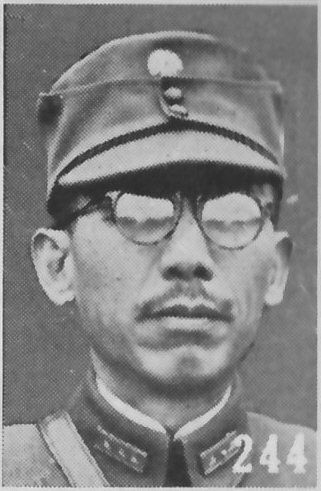
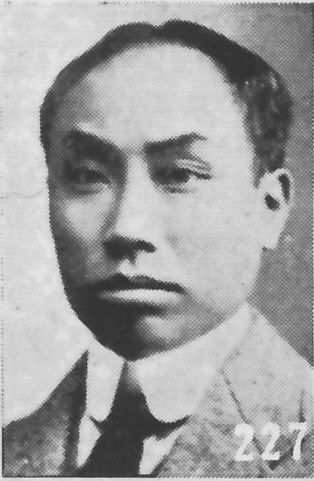
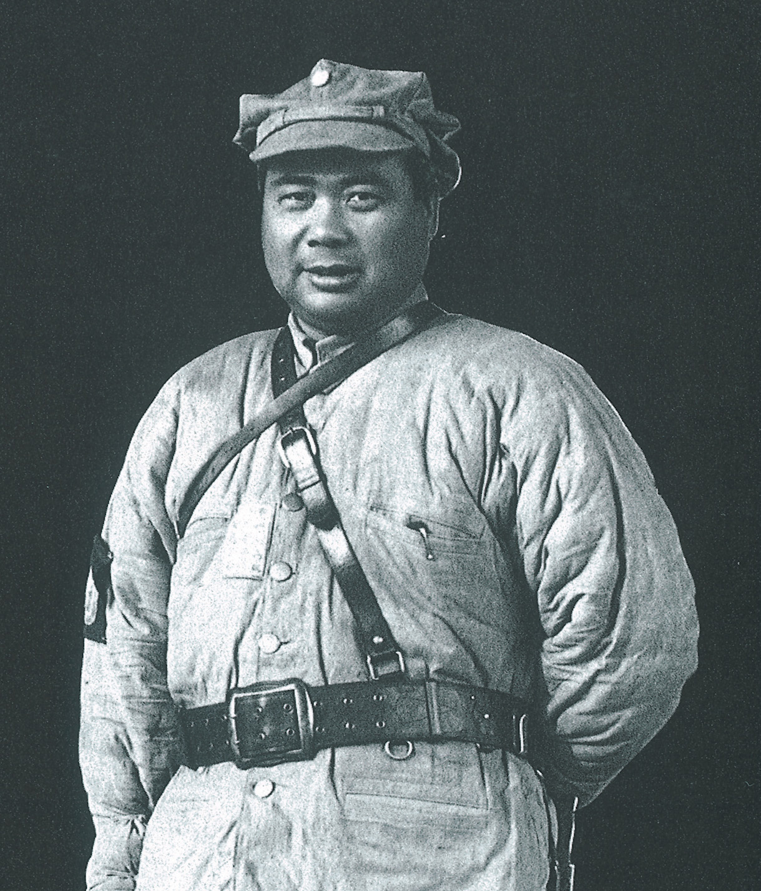

一、从合作到破裂：四月至七月上旬
1927 年 4 月—5 月 · 事实陈述 · 已核阅指定范围
四一二之后，武汉成了革命的中心
1927 年 4 月 12 日，蒋介石在上海动手清党，史称“四一二反革命政变”。四天以后，蒋介石在南京另行成立“国民政府”，与武汉的国民政府对立，全国一时出现北京、南京、武汉三个政权对峙的局面。武汉方面管辖湖北、湖南、江西三省，那时它基本上还是一个革命政府，中共中央也迁到武汉继续与国民党左派合作。
同年 4 月 27 日至 5 月 9 日，中国共产党第五次全国代表大会在武汉召开，出席代表八十多人，代表党员五万七千九百六十七人，大会选出中央委员会和中央监察委员会，陈独秀继续担任总书记。但大会没有对武汉政府内部的各派作出正确分析，也没有解决全党强有力的领导问题——同一份文件还记着毛泽东“完全被陈独秀排斥于大会的领导之外，并被剥夺了在大会上的表决权”。此后武汉政府辖区的反共事件接连不断。
需要留意的是，这时“武汉”并不等于“共产党”。中共在武汉有中央机关、有电台、有几万党员，有几十万人的工会队伍和两百多万农会会员；同时汪精卫领导的国民党中央和湖北省党部就摆在同一座城市里，掌握着政府、军队和财政。七月发生的这场转折，本质上是这座城市里的两套权力在同一天摊牌。
[s02] [s03] [s18]
1927 年 4 月—6 月 · 历史解释 · 已核阅指定范围
汪精卫：为什么是他在 7 月 15 日开口
要理解 7 月 15 日，先要看清汪精卫此前的位置。蒋介石动手清党时，汪精卫还在国外，党内拥汪的一派人把他接回来，推举他以国民党中央政治委员会主席团名义主持武汉方面，理由是他姿态最左、最能代表“革命”。四一二之后，武汉方面一度高喊“讨伐蒋介石”“革命的站到左边来”，汪精卫也以“左派领袖”的姿态出现。
但清党同时清掉了他自己的盟友。蒋介石赶走了胡汉民、李济深等一系人，等于替汪精卫扫清了党内对手，也让他失去了讨蒋的筹码：蒋介石手上有南京的中央党部和政府，武汉这边只有两湖三省的军事实力和一堆正在互相推诿的部队。武汉的财政、军械、外交都仰赖别人，中央银行也没有真正到手。就在这种处境里，武汉方面的“左派”姿态开始一点点被抽空。
官方党史叙述把这一段概括为：蒋介石叛变后，汪精卫的政治立场日趋右倾，从“纠正农民运动过火”、查办湘鄂赣各省“过激”言行，到解散黄冈、黄陂两个大县的农民协会，一步一步从限制共产党走到了清除共产党。读这段历史时，分清两件事很重要：汪精卫的反共既有个人算计，也有他当时真实面对的军事与财政困局；把他只写成“早就想杀共产党”会失真，把他只写成“被蒋介石吓住”同样失真。
[s03] [s02]
1927 年 5 月 17 日—21 日 · 事实陈述 · 已核阅指定范围
五月到六月：军队先动手，党内还在讲团结
5 月 17 日，武汉国民政府所辖四个军的指挥官在武昌召开反共秘密会议。几天后，驻宜昌的独立师师长夏斗寅叛变并攻打武汉；5 月 21 日，国民党第三十五军军长何健所属的许克祥部在长沙叛变，封闭湖南革命团体，解除工农武装，屠杀革命者。因为那一天是旧历四月初五，代号“马”，这件事后来被称为“马日事变”。
对共产党人来说，这是明确的信号：对峙已经从党内争论升级到枪口。但中共中央当时的判断是继续拉住汪精卫集团，用停止部分工农运动来换取合作继续。6 月 1 日共产国际发来指示，要求揭露蒋介石、孤立国民党右派、改造国民党机关、组织军队、改进工作；6 月 5 日汪精卫解除了苏联顾问鲍罗廷的国民政府最高顾问职务，6 日朱培德按汪的旨意在江西驱逐共产党。
与此同时，汪精卫、孙科、唐生智、冯玉祥等在郑州开会商定，由冯玉祥坐镇北方，调北伐军唐生智部回师镇压湘鄂两省工农运动。汪精卫此时想的是：借“分共”向蒋介石要价，同时争取冯玉祥这样的第三方。冯玉祥却在 6 月 19 日与蒋介石在徐州另行会面，随后与蒋介石联名通电，要求武汉早日驱逐鲍罗廷、实行清党、完成北伐。汪精卫失去第三方，退路只剩一条。
[s03] [s10]
1927 年 6 月—7 月上旬 · 事实陈述 · 已核阅指定范围
六月：共产国际的电报成了最好的武器
7 月 5 日，汪精卫在一次讲话中攻击共产国际，说共产国际主张“国民党不能够领导国民革命，要由共产党来领导”，而共产党怎样去领导，“就是要消灭国民党”。这句话点出了他后来公开使用的那件武器。
这件事的来龙去脉是：6 月 1 日共产国际发来《五月紧急指示》（由罗易带到武汉），指示中确有没收土地要由下级自行执行、增加工农代表进入国民党中央、改组国民党军队、组织特别法庭等条款。中共中央收到后认为不符合中国实际，回电表示暂难执行；7 月 4 日在汉口三教街召开的中央政治局扩大会议上，总书记陈独秀和鲍罗廷都主张暂不执行，激进派反对；陈独秀与鲍罗廷还决定在两湖地区停止部分工农运动，以重建国民党左派与共产党的联合战线。
7 月中旬，根据共产国际执委会指示，中共中央改组，由张国焘、李维汉、周恩来、李立三、张太雷五人组成中央政治局临时常务委员会，陈独秀离开中央领导岗位。7 月 13 日，中共中央发表《对政局宣言》，其中说“近日已在公开的准备政变，以反对中国人民极大多数的利益及孙中山先生之根本主义与政策”，宣布“决定撤回参加国民政府的共产党员”，同时又声明“一切革命工作，中国共产党都要和国民党党员群众一切真正革命分子，共同去实行——因此共产党员决无理由可以退出国民党，或者甚至于抛弃与国民党合作的政策”。同一份文件还指名批评“汪将国际向他提议国民党应组织两万 C.P.、三〔五〕万工农分子军队之电报”，说武汉方面是在用这份电报做“煽动分家之材料及投降蒋介石唐生智之掩饰”。这些电文当时是机密，汪精卫通过某种渠道拿到了《五月紧急指示》的内容，这成了他 7 月 15 日报告的全部素材。
[s01] [s02] [s03] [s21] [s23]
1927 年 7 月 9 日—14 日 · 事实陈述 · 已核阅指定范围
7 月 9 日到 14 日：决定已经做出，只等宣布
7 月 9 日，武汉国民党中央执行委员会举行扩大会议，通过决议限制共产党在国民党内的活动，取缔共产党在国民革命军中宣传共产主义。7 月 14 日晚，武汉国民党中央政治委员会主席团又召开一次秘密会议策划“分共”，接受了汪精卫提出的分共主张，通过《统一本党政策案》：凡列名国民党员而在各级党部、各级政府和国民革命军中任职者，应自即日起声明脱离共产党，否则一律停止职务；共产党员不得以国民党的名义做共产党的工作；国民党党员未经中央许可不得加入他党，违反者以叛党论。
同一晚的会议还决定派要员赴莫斯科说明孙中山的联俄政策，并说“对于武汉国民党内的共产党员，应有处置的办法，一党之内不能主义与主义冲突，政策与政策冲突，更不能有两个最高机关”。这几句说明，7 月 14 日晚上做的决定已经不只是一次政治表态，而是要把在国民党内任职的共产党员全部清出去。
7 月 14 日，宋庆龄发表严正声明，宣布退出武汉政府，公开与汪精卫决裂。就在同一天晚上，主席团开了秘密会议。也就是说，公开决裂与内部定策几乎同时发生，只是分了两个方向：宋庆龄向公开走去，汪精卫向隐蔽走去。
这件事在国民党内部也不是一边倒。中共中央 7 月 24 日的通告记：7 月 14 日夜的主席团秘密会议上，“兼有中国国民党籍之中国共产党员都被排斥而不得参加”；宋庆龄（文中称“孙夫人”）、于右任、彭泽民、陈友仁、邓演达等少数人反对分共，其余“余均实行反动”。7 月 13 日中共中央的宣言也点明，国民党中央多数领袖是“动摇妥协的政策”，其结果“使反革命在武汉首都，也筑下巩固的基础”。也就是说，把 7 月 15 日讲成一次全党一致的行动并不准确——至少在国民党内部，反对分共的人存在，而且很快付出了代价：宋庆龄 7 月 14 日发表声明退出武汉政府，邓演达也在这一阶段离开汉口北上。
[s01] [s03] [s21] [s23]
1927 年 6 月 28 日—29 日 · 存在争议 · 有争议
六月二十八日：工人纠察队解散，枪械交存政府
七一五之前，武汉已经发生过一次意义重大的缴械。6 月 28 日，湖北全省总工会解散纠察队，并在次日《汉口民国日报》刊出布告。布告的措辞很克制：为“避免反动派借口武装纠察造谣起见”，“业于本月二十八日将纠察队全体解散。所有前领枪弹，并经交存政府，一面仍请政府派兵保护工会”。
这份布告是当时唯一公开的文字依据，它把这件事说成工会自己的决定。但同一时期另一种说法也在流传：国民党方面记载，6 月 29 日武汉警备司令李品仙与第三十五军军长何键都表示反共，并“解除汉口工会纠察队的武装”；共产党的文件则说，中共决定“解散纠察队，实际编入张（发奎）军”之后，纠察队人员“弃枪弃职，逃走一空”。三种说法指向同一批枪和同一批人，却给出不同的责任归属：是自己交枪，是被军队解除，还是队伍自行溃散。
无论哪种说法，结论都一样：共产党在武汉失去了唯一的成建制武装。一个月后，当 7 月 19 日的通令要求军队政工人员与共产党脱离关系时，能用来反制的只剩下起义时才临时拉起的队伍。中共中央 7 月 24 日的通告因此把这一串事写在一起：国民政府“既而嘉奖许克祥及夏斗寅所领导之豪绅土匪屠杀工农摧残党部及人民团体，并且政府自己亦下令解散党部及人民团体”，并说“最近受反动军队之要挟”，国民党中央才在 7 月 15 日开了那个会。
[s22] [s23]
二、7 月 15 日：“分共”会议这一天
1927 年 7 月 15 日 · 事实陈述 · 已核阅指定范围
7 月 15 日：汪精卫在会上说了什么
7 月 15 日，汪精卫召开武汉国民党中央常务委员会第 20 次扩大会议，讨论中央政治委员会主席团关于“分共”的决定。他作了以“分共”为主旨的报告，介绍前一晚主席团讨论的情况，并借共产国际《五月紧急指示》逐条发难。他把那份电报归纳成五条，说“随便实行哪一条，国民党就完了”：第一条是不用国民政府下令、由下级自行没收土地；第二条是增加工农代表进入中央委员会，指为“破坏本党的组织”；第三条是主张改变国民党的构造；第四条是由二万共产党员和五万工农分子另组新军，指为“完全变成 C.P. 的军队”；第五条是组织特别法庭、由老党员处分“反革命派”，指为“让国民党来做刽子手”。
会上孙科、顾孟余、谭延闿等也发表分共言论。孙科说从第三国际的电报看，共产党人加入国民党是要“使三民主义共产主义化”，并公开为“马日事变”的制造者张目，吹捧许克祥“湖南上次的事变发生，大家都举手加额，喊许克祥为许青天，视许为救主”；顾孟余则说本党的“主义、政策、组织三个原素差不多都受了容共的影响”，“因此不能不对共产党加以相当的制裁”。
会议最后决定“取缔共产党之三项办法”：一个月内召开第四次中央执行委员会全体会议讨论；在全会之前，中央党部制裁一切违反本党主义政策之言论行动；派遣重要同志前赴苏俄讨论切实联合办法。湖北省图书馆收录的这份史料把 7 月 15 日这一天定性为“汪精卫集团公开提出取缔共产党、宣布‘清党’的会议”。
[s01] [s10] [s04]
1927 年 7 月 15 日—9 月 16 日 · 事实陈述 · 已核阅指定范围
同一件事，两种说法：两边留下的文字
7 月 15 日汪精卫在报告里说：“国民政府本是本党执行命令之最高机关，既然退出其国民政府，便无异脱离本党……且国民革命军及各级政府机关，都属于国民政府的系统，既然退出国民政府，则在国民革命军中、各级政府机关中，亦无须存在。”这句话把逻辑讲得很清楚：既然中共中央 7 月 13 日宣布撤回参加国民政府的共产党员，那么这些人在党内、在军队、在政府里就都不该再存在。
国民党方面事后留下的文件同样直白。1927 年 9 月 16 日成立的中国国民党中央特别委员会《宣言》说：“未几，武汉诸忠实同志发现共派消灭本党之阴谋，认为与总理容共政策根本上不能相容，遂于七月十五日在湘、鄂、赣三省厉行清党。”这是国民党自己的公开文件，写明七月十五日“在湘、鄂、赣三省厉行清党”。
所以两边其实指向同一个动作，差别在命名和定性：国民党称“分共”，把清党视为“清党”的一个环节；中共称“七一五反革命政变”，把它定为第一次国共合作全面破裂的标志。今天写作时更稳妥的做法，是先讲清这一天具体做了什么（开会、通过政策案、随后清党），再说谁用什么名称称呼它，而不是先用一个名字把读者引到结论上去。
[s01] [s06] [s10]
1927 年 7 月 16 日—19 日 · 事实陈述 · 已核阅指定范围
“和平分共”的训令，与同一天开始的抓捕
7 月 16 日，武汉国民党中央执行委员会向各级党部发出两项训令，用意是表明“和平分共”的“诚意”。一是《保护共产党员个人身体自由的训令》，说 15 日限制共产分子的提案只是纠正过去的错误、执行党的纪律，还正告“若对共产分子压迫，妨害其个人之身体自由，或指诬他人是共产分子，意图陷害者，务即依法严办”；二是《保护农工之训令》，说国民党中央并不因限制共产分子而停止农工政策。
国民党方面的公开说法与此一致。同日中央政治委员会主席团发表声明，针对中共 7 月 13 日撤回参加国民政府党员的宣言，宣布“本党基于总理遗教，对共党仍力求容忍”，并说“试阅中央执行委员会于七月十五日所通过之三项决议案原文，即知其极力保持革命联合阵线之明确用心，非任何人所能否定攻击也”。汪精卫本人 1927 年 11 月 5 日写《武汉分共之经过》，把武汉分共的经过分成三个阶段：第一阶段制裁共产党人违反本党主义政策的言论行动，第二阶段“和共产党和平分离”，第三阶段才是“以严厉手段驱除共党”；他明确写道，七月十五日中央执行委员会议决分共的同时“又发布命令，保护共产党人之身体自由”，所以“其分离必经过郑重的手续，且其分离必采用和平的方法，而不用激烈的行径”。
但就在颁发这两项训令的同一个下午，武汉已经开始抓人。湖北省图书馆的史料记：在育才学校、文化书社等处一天就捕去二十余人；何键所部一个团长在孔垄镇一次枪毙了二十多名共产党员。也就是说，7 月 15 日之后的武汉，同时存在两套说法和两种做法：文件上说“和平”，街上在抓人。这不是谁在撒谎那么简单，而是同一个政权同时在做两件事——用文书保留“联合阵线”的名义，用行动把共产党人从军队、党部和团体里清出去。
7 月 19 日，武汉政府训令军事委员会通饬各军长官，务须在最短时间内核查所部的军事负责人员和政工人员，对已知名的共产党员“切实劝导”，使之与共产党脱离关系，“否则即行停止职务”；对未知名者则“随时留心查禁，禁止一切秘密会议”。这份通令把清党推进到军队内部：从此“不肯退党”的军官，就等于自己把自己摆到了枪口前。 7 月 18 日，武汉方面进一步动作：据《李宗仁回忆录》等回忆材料记述，国民政府以政治委员会主席团名义，把武汉国民政府内的共产党员一律停职。
[s01] [s15] [s16]
1927 年 7 月 25 日—8 月 8 日 · 事实陈述 · 已核阅指定范围
从“和平分共”到“武力清党”
7 月 25 日，汪精卫在武汉国民党中央政治委员会上已经杀气腾腾：“应当对共产党提出警告，再这样乱闹，莫怪我们翻脸了！”“再要闹，只好捉人！”7 月 26 日，中央执行委员会发表《统一本党政策决议案》；7 月 27 日又发表《告中国共产党书》，说加入国民党的共产党人“不愿接受本党决议，而至破坏全部革命工作”，要求“共产党应即自憬，放弃其近日对本党敌视的态度”，并称“我们为中国整个革命前途计，为全国的贫苦人民计，对于共产同志不能不加以制裁”。
8 月 1 日，国民党中央政治委员会第四十二次会议决定改组湖北省党部，成立以孙科、孔庚、潘云超为委员的改组委员会；改组后的湖北省政府和武汉卫戍司令部等联合成立“镇反”委员会，专门负责逮捕、屠杀共产党人和革命群众。8 月 2 日，武汉国民政府发布布告，宣布凡继续从事革命活动之共产党员“一经拿获，即行明正典刑，决不宽恕”。
8 月 8 日，国民党中央政治委员会根据汪精卫的提议通过厉行“清党”的办法：开除谭平山、林祖涵、吴玉章、恽代英、高语罕、杨匏安、毛泽东、董用威、许飕魂、邓颖超、韩麟符、于树德、江浩、夏曦等人的党籍并褫夺现职，对徐特立、李立三、张国焘、彭湃、周恩来等一律通缉拿办；同时通过《清查共产党员办法》，要求党政军人员一律登记声明有无跨党，既不退出又不声明者以反革命论处，并改组湖北省党部和群众团体。把这些日期排在一起，会看到一条与汪精卫自述吻合的线索：7 月 16 日“和平分共”的训令、8 月 2 日“即行明正典刑”的布告、8 月 8 日的通缉名单与《清查共产党员办法》，都落在 8 月 1 日南昌起义之后——这正是汪精卫所说的“南昌之变…国民党遂不得不由和平的分共而进于严厉的驱共”。
[s01] [s15]
三、白色恐怖：谁在哪里付出了代价
1927 年 7 月下旬—8 月 · 存在争议 · 有争议
屠杀发生在哪里，以及“三种说法对不上的地方”
七一五之后，武汉立刻开始捕杀。《武汉市志·政党志》记：7 月 13 日，中共江岸区委负责人宋继武因散发反对国民党的传单而被捕牺牲，此后“几乎每日武汉三镇均有共产党员遭受枪决”；7 月 29 日，汉口华界人力车夫反抗军队压迫遭镇压，死伤十余人；随后镇压共产党领导的“八二”总同盟罢工，逮捕工人六十多人，工运领袖胡锡泰、雷春堂、魏大年等多人遇害。湖北省图书馆的史料则记：汉口济生三马路、裕华纱厂前面、一纱厂一马路与四马路、汉口和记蛋厂、大智门等处“数日内被杀者多至数千人”；武昌的阅马场与文昌门外也是大屠杀的主要场所。
但把时间轴拉长，第二个高峰出现在更晚。1927 年 10 月宁汉战争爆发，11 月桂系军阀进占武汉，改组省、市政府与党部，成立武汉卫戍司令部（司令胡宗铎、副司令陶钧），自此进入武汉统治最黑暗的时期：11 月 28 日震寰纱厂惨案，23 名学生和女工被捕，陶钧在名单上画圈写上“一律枪决”，改判为 20 岁以上均判死刑；12 月 16 日凌晨武汉公安局包围中山大学，捕去 19 人；12 月 17 日，武汉市公安局长林逸圣在日租界捕走著名的国民党左派、原湖北省政府教育厅长李汉俊与财政厅长詹大悲，当晚 9 时许未经审讯杀害；12 月 19 日另有 9 名共产党员和共青团员遇害。按《武汉市志·政党志》的统计，胡、陶统治期间在武汉三镇先后杀害共产党人和革命群众 800 余人。
这就带出本事件最值得辩论的一处分歧。党史一线的叙述把七一五与“大屠杀”连在一起，《中国共产党简史》写的是“7 月 15 日，武汉国民党中央召开‘分共’会议，正式决定与共产党决裂，并对共产党员和革命群众实行大逮捕、大屠杀”；武汉地方志的细分口径则是“七一五”＝分共与清共的命令，屠杀高峰在 11 月桂系入汉之后。两说并非只能取其一：7 月 15 日之后确实立刻开始抓捕与处决，规模最大的成批处决则在四个月后；但把“分共令”与“大规模处决”分别安放到不同的人与时间上，才能看清责任是怎么一层层转移的。
还有一个常被混用的口号。“宁可枉杀一千人，不可使一人漏网”在中共中央统战部网站的文章里被写成汪精卫等人提出的口号；湖北省图书馆这份史料的原始表述是“一些反动军警头目叫嚣：宁可错杀三千，决不放过一人”，另有天门土豪劣绅的“宁可错杀一千，不可放走一人”；而《武汉市志·政党志》把“宁可错杀三千，不可漏掉一人”明确系于 1927 年 11 月以后桂系胡宗铎、陶钧的统治期。其他转述则指出，这一口号在军中以第 19 军副军长陶钧最为人知，而汪精卫在 7 月 25 日的会议上仍公开否认主张杀人。所以更稳妥的写法是：这类口号确实在武汉出现过，但把它当作汪精卫本人在 7 月 15 日的确定原话，在当时文献中是存有争议的。
[s01] [s03] [s07] [s17] [s18] [s10]
1927 年 7 月—1929 年 2 月 · 事实陈述 · 已核阅指定范围
留下名字的人，和他们各自的日期
武汉党史网保存了一份“大革命失败后革命烈士就义处”的名录，记下几处主要地点和遇难者的名字：在汉口济生善堂广坪的，有湖北地下党工运负责人吴良华、湖北农协秘书长邓雅声、共青团湖北省委书记唐鉴；在汉口余记里空坪的，有向警予、夏明翰；在武昌文昌门外就义的有中共湖北地下省委书记魏人镜、夏文法、省委秘书长曹壮父；另外，国民党左派、原湖北省政府财政厅长詹大悲和教育厅长李汉俊被害于汉口水塔。这份名录本身没有标注每个人的日期，把日期补上，就会看到这些名字并不集中在同一天。
李汉俊与詹大悲死在 1927 年 12 月 17 日，而且是 11 月入汉的桂系势力所为：据《武汉市志·政党志》，当天武汉市公安局长林逸圣亲率大队军警在日租界将二人捕走，当晚 9 时许未经审讯便予杀害。向警予是 1927 年 4 月到武汉、继续留在白色恐怖中负责湖北省委工作的共产党人，1928 年 3 月因叛徒出卖被捕，同年 5 月 1 日被枪杀于汉口余记里空坪。邓雅声按《武汉市志·政党志》记为中共京汉路区特委书记，1928 年 2 月中下旬遇害；夏文法作为湖北省委书记，在 1929 年 2 月省委再次被破坏时被捕并遇害。
这些名字分属不同的身份：工人运动的组织者、农会负责人、党的省级领导，也有国民党的左派。这份名单本身就是这段历史的注脚——被清的不只是共产党，反对清党的国民党人同样会死。遗体处置的细节也留在同一批记载里：共产党员、船工陈春和等人曾用小船在夜里把遗体从汉口运到汉阳，秘密安葬在龟山西南麓补乾亭（六角亭）附近，并记下烈士英名；后来陈春和也被杀害，名册遗失，今天只剩向警予、马骏三、赵世当、陈其科等零星名字可考。1955 年因修建长江大桥，遗骨迁葬汉阳扁担山；1986 年迁建于龟山，即今天的向警予烈士陵园。
[s07] [s17] [s20]
1927 年 8 月—1928 年上半年 · 事实陈述 · 已核阅指定范围
数字：组织和群众怎样被摧毁
湖北省图书馆的史料给出了一组来自中共湖北省委的统计。据中共湖北省委不完全统计，从 1927 年 8 月至次年上半年，全省党员、群众被杀害的多达 3.8 万余人，其中共产党员、共青团员和各级负责干部占多数。全省党员人数由大革命高潮时期的 1.7 万余人急剧减到 2000 余人；湖北省委书记 9 月上旬给中央的报告说：“党员的数量我接事时有八千人，到总罢工之前三四天，仅有三千，罢工后减至二千五百，八月中旬更减至二千，现在仅存一千二百六十九人了，其中尚有些靠不住。”
组织基础同样被摧毁。工会方面，政变前武汉三镇有 11 个产业总工会、80 多个产业分会、职业组合 44 种以上，约 33 万人的工会队伍被分化瓦解，政变后仅 1.4 万人还在党的领导之下；省委书记在 9 月的报告中承认“说到工会的力量……整个的自然拿不住，这是很糟糕的”。7 月 30 日晨，武汉卫戍司令部突查汉口友谊街的全国总工会和湖北全省总工会。按《武汉市志·政党志》的另一种统计口径，胡宗铎、陶钧统治期间在武汉三镇先后杀害共产党人和革命群众 800 余人；湖北党史网《红色战士公墓》一文则记到 1929 年春“被屠杀的共产党人、革命志士、革命群众近千人”。
农村方面，据 1927 年 5 月统计，湖北全省有县农协 22 个、县农协筹备会 32 个、区农协 380 个、乡农协 3852 个，会员总数 284 万余人，农民武装有枪两千多支；政变后各级农协有的查禁、有的改组、有的被捣毁，农民自卫武装悉数被收缴，农运工作基本停顿。“一度被称为‘赤都’的武汉，浸透了革命者的鲜血”——这是那段史料自己的结语。
[s01] [s17]
1927 年 7 月—9 月 · 事实陈述 · 已核阅指定范围
转入地下：城市里的七天
7 月 17 日，国民党中央工人部通令各省党部，提出严密党与工会关系、严密工会特别党部组织等四项办法，把党对工会的控制固定下来。湖北反动政府随即取缔共产党，整顿和改组工会、农会、商民协会、妇女会、学生联合会等群众团体，颁布限制性法令，严禁示威游行、群众大会与政治罢工，违者轻则入狱、重则极刑。革命人民此前争取到的集会、结社、出版、言论、罢工自由和八小时工作制等权利被完全取消。
8 月 8 日的《清查共产党员办法》之后，党组织被打散，大量意志不坚定者登报声明脱离共产党、共青团，甚至公开悔过。武汉党史网的记载说得很直接：1927 年“七·一五”反革命政变后，中国共产党的组织、活动被迫由公开转入地下。
转入地下的中央机关，就在汉口天津街 12 号（原德林公寓 2 号）。中共中央军委书记周恩来和邓颖超曾秘密居住于此；周恩来赴南昌领导起义、邓颖超转移市郊后，瞿秋白、杨之华夫妇以及李维汉、邓小平也秘密住在这里，筹划挽救革命大计，其间筹备、主持召开中共中央紧急会议，决定举行秋收暴动，妥善安排干部转入地下。1927 年 9 月，中共中央机关陆续迁往上海。这所房子 1983 年被武汉市人民政府公布为市级文物保护单位。
[s01] [s08] [s09]
1927 年 7 月—11 月 · 存在争议 · 有争议
三种说法对不上：七一五与“大屠杀”是不是同一件事
把几份材料并排放，会看到同一段时间被讲成三个样子，而这三种说法都能找到文本依据。
第一种是党史口径。《中国共产党简史》写：7 月 15 日武汉国民党中央召开“分共”会议，正式决定与共产党决裂，“并对共产党员和革命群众实行大逮捕、大屠杀”，并把七一五视为大革命失败的标志。《中国共产党简史》和中共中央党史和文献研究院“党史1000问”的写法，都把“分共”与“大屠杀”并入同一天。这是最通行的叙述。
第二种是当事人自述。汪精卫 1927 年 11 月 5 日的《武汉分共之经过》说，分共分三个阶段，第二阶段是“和共产党和平分离”，第三阶段才是“以严厉手段驱除共党”；他明确把转折点放在南昌起义：“南昌之变，江西备受荼毒…国民党遂不得不由和平的分共而进于严厉的驱共了。”国民党中央 7 月 16 日的声明也说七月十五日通过的三项决议案“极力保持革命联合阵线”。按这个说法，7 月 15 日当天做出的是一道政治决裂令，不是屠杀令。
第三种是地方志的细分口径。《武汉市志·政党志》把七一五定位为“分共、清共”的命令与随后的每日捕杀，把震寰纱厂惨案（11 月 28 日）、中山大学被捕案（12 月 16 日）、李汉俊与詹大悲被害（12 月 17 日）这些成批处决系于 11 月桂系胡宗铎、陶钧入汉之后，并把“宁可错杀三千，不可漏掉一人”归给桂系政权；该书统计胡、陶统治期间在武汉三镇杀害共产党人和革命群众 800 余人。按这个说法，7 月 15 日到 11 月是一段持续但分散的镇压，11 月以后才是制度化的大规模处决。
三种说法并不必然互斥：7 月 15 日之后确实立刻开始了抓捕与零星处决，制度化的成批处决则在四个月后；真正有争议的不是“有没有杀人”，而是七一五这一天本身究竟做了什么、以及谁应当为后来那些成批的处决负责。把分歧摆出来，比给出一个斩钉截铁的结论更接近这段历史的实际。
还有一件同样能说明问题的事。8 月 6 日，汪精卫在汉口《民国日报》发表《错误与纠正》，承认此前处置失当：据研究转述，该文说“我们为什么一直等到共产党员快要消灭国民革命，我们才不容他，这真是我们极大的错误”。把它与 11 月 5 日《武汉分共之经过》放在一起看，一个更清晰的轮廓就出现了——7 月 15 日是决策日（分共程序启动），7 月 18 日前后是执行期（停职、军中肃清），7 月 26 日至 8 月 8 日是升级期（庐山会议、公开清党、通缉名单），8 月 1 日南昌起义则是这一升级的直接后果。党史叙述把这一全过程统称为“七一五反革命政变”，国民党方面的《武汉国民政府史料》则把 6 月 4 日至 11 月 5 日的一批文件编在“九、七一五事变”一节之下，两种编排各有道理，争的其实是从哪一天算起。
[s01] [s15] [s16] [s17] [s18]
四、后果、别称与今天留下的痕迹
1927 年 7 月下旬—8 月 1 日 · 事实陈述 · 已核阅指定范围
8 月 1 日：南昌起义
七一五之后，中共和武汉方面的关系断绝，被清出去的党组织必须自己拿起武器。7 月下旬，中共中央政治局临时常委会正式决定在南昌发动武装起义；7 月 27 日，成立由周恩来、李立三、恽代英、彭湃组成的中共前敌委员会；8 月 1 日，在以周恩来为书记的前敌委员会领导下，贺龙、叶挺、朱德、刘伯承等率领党所掌握和影响的军队两万余人，在南昌举行起义并占领南昌城。
官方党史叙述对因果关系写得很直接：在以汪精卫为首的武汉国民政府实行“分共”和“清党”后，中共中央临时常委迅即决定实行武装反抗，在南昌举行武装起义。这一次起义“南昌起义打响了武装反抗国民党反动派的第一枪，标志着中国共产党独立领导革命战争、创建人民军队和武装夺取政权的开始”。
这里有一个容易写错的细节。武汉政府当时正在“东征讨蒋”，叶挺的第二十四师自 7 月 11 日起陆续开抵九江，贺龙部 7 月 10 日离开武昌驻黄石、7 月 19 日奉命撤到九江、7 月 27 日抵南昌——这些调动当时的名义是东征，不是被逐出武汉。七一五带来的直接压力，是 7 月 19 日那份要求军队政工人员与共产党脱离关系的通令，以及随后高级军官要求中共党员“退出军队或脱离 C.P.”的逼宫。部队走向南昌，是这一压力加上起义决策共同作用的结果。
[s05] [s12] [s01]
1927 年 8 月 7 日 · 事实陈述 · 已核阅指定范围
8 月 7 日：八七会议与路线的转弯
8 月 7 日，中共中央在汉口召开紧急会议，即八七会议。会议纠正了以陈独秀为首的中央所犯的右倾机会主义错误，确立实行土地革命和武装起义的方针，选举了中央临时政治局，瞿秋白当选常委并任主席。这一次会议常被称为中国革命的转折点：从大革命失败到土地革命战争兴起。
常见的因果链是：毛泽东 1927 年 3 月写出《湖南农民运动考察报告》，但他的意见没有进入中央决策——《中国共产党简史》记，五大上“毛泽东完全被陈独秀排斥于大会的领导之外，并被剥夺了在大会上的表决权”；接着发生四一二、马日事变和七一五，革命损失惨重；八七会议才把方向定下来。主持八七会议的是瞿秋白，他 1935 年在莫斯科写《多余的话》时回忆：“武汉的国共分裂之后，独秀就退出中央……这样我担负了直接的政治领导的一年光景（一九二七年七月到一九二八年五月）。这期间发生了南昌暴动，广州暴动，以及最早的秋收暴动。”
这几句自述很能说明当时的处境：一个在湖南实地考察、写出了震动一时的报告的人，他的声音却没能改变中央的判断；等到七一五把局面推到底，八七会议才把土地革命和武装反抗写进方针。也正因为如此，把《湖南农民运动考察报告》写成七一五的后果是错的——它写在 1927 年 3 月，比七一五早了四个多月，它是前因和背景，而不是后果。
[s12] [s05] [s18] [s19]
1927 年 8 月—9 月 · 事实陈述 · 未核验
宁汉合流：两个政府合成一个
分共的同时，汪精卫并没有放弃讨蒋，仍把蒋介石视为“党国唯一的敌人”。但蒋介石主持的北伐也不顺，徐州失守，桂系首领李宗仁软硬兼施，终于逼蒋介石与胡汉民等人下野，8 月 13 日蒋介石正式下野。武汉方面的机关从 8 月底、9 月初陆续迁往南京，两边合流。
9 月 16 日，中国国民党中央特别委员会在南京成立并发表《宣言》，代行中央执行、监察委员会职权，改组国民政府，并定于三个月内筹备第三次全国代表大会。《宣言》说得很清楚：既“继续清党”，也“继续北伐”。这一天距七一五不到两个月，武汉政府就从革命政府变成了新南京国民政府的一部分。
需要标明的是，这个阶段的日期在公开资料中并不统一：武汉国民政府宣布迁都南京有 8 月 19 日、8 月 25 日和“8 月底 9 月初机关陆续迁往南京”几种说法；中央特别委员会的成立日有 9 月 15 日与 9 月 16 日两说。本稿只采用有文件可查的 9 月 16 日《宣言》落款，其余保留差异，不做取舍。
[s06] [s10]
1927 年 7 月 15 日 · 历史解释 · 已核阅指定范围
怎么称呼这一天：当事人、党史与地方志的三套词
同一个动作，有好几套叫法，而且每套叫法背后都是一次立场选择。国民党方面当时的官方措辞是“分共”：国民党中央 7 月 16 日的声明、7 月 27 日的《告中国共产党书》，以及汪精卫 11 月 5 日的文章《武汉分共之经过》，用的都是这个词；汪精卫在这篇文章里说，“我们分共，是与张作霖的讨赤、帝国主义的反赤不同，我们是为国民党而分共，为三民主义而分共的”。当事人的说法并不统一：瞿秋白回忆的是“武汉的国共分裂”，国民党左派邓演达批评的是“武汉中央背叛革命”，当时一位准备脱党的中共党员施存统则把决裂归因于“争夺革命的领导权”——都不是“反革命政变”。
“七一五反革命政变”这个标签并不出现在 1927 年的当事人文本里，也不出现在两版《中国共产党简史》的正文里：2001 年版写的是“7 月 15 日，汪精卫召开国民党中央常务委员会扩大会议，正式同共产党决裂”，2021 年版写的是“7 月 15 日，武汉国民党中央召开‘分共’会议，正式决定与共产党决裂，并对共产党员和革命群众实行大逮捕、大屠杀”。它大量出现在三类文本里：中央党史和文献研究院面向宣传教育的“党史1000问”专栏标题、武汉地方志与年鉴系统、以及纪念宣传材料。官方档案编研则多用中性的“七一五事变”——武汉地方志数字方志馆所收《武汉国民政府史料》一书，就专设“九、七一五事变”一节收录当年文件。
对今天的读者来说，最实用的做法是把名称拆成两层。第一层是事实：1927 年 7 月 15 日武汉国民党中央开会作出“分共”决定，7 月 16 日起武汉开始捕杀共产党人和农工群众，7 月 19 日军队政工人员被要求与共产党脱离关系，8 月 8 日国民党中央通过厉行“清党”的办法——这一层有会议记录、训令、通告与地方党史记载可以对照。第二层是定性：“反革命政变”是中共党史的政治判断，与“四一二反革命政变”并列使用；“分共”是国民党当时对自己动作的称呼；“七一五事变”是档案编研的中性标签。它们的差别不在事实，而在政治立场与叙述场合。把这一点讲清楚，读者才不至于被任何一个名字牵着走。
在中文历史写作里，用日期命名事件是通例——“五四”“七七”“八一三”“一二·九”都很常见，所以“七一五”这种简称极易重名。这也是本稿在标题中写明“1927 年武汉”的原因。
[s03] [s06] [s10] [s15] [s16] [s18] [s19]
1937 年—1948 年 · 事实陈述 · 已核阅指定范围
两个同名异事，和今天武汉留下的痕迹
需要专门排除的两个同名异事。其一是 1948 年 7 月 15 日昆明的“七一五”学生运动：中共中央在纪念五一国际劳动节口号中号召反对美帝扶植日本复活，昆明四十余所大中学校近万名学生于 6 月 17 日在云南大学召开“反美扶日”大会；7 月 9 日蒋介石电令云南当局“即饬宪警进入云大等校逮捕奸党”；7 月 15 日凌晨，宪警在警备总司令何绍周指挥下进攻云南大学会泽院和南菁中学，抓捕学生八百多名，中共昆明市委党史研究室把它称作“云南七一五学生运动”。这与 1927 年武汉毫无因果关系。
其二是番号：1937 年八路军第一二〇师三五八旅下有“七一五团”，1938 年与师直骑兵连组成大青山支队，开辟绥远大青山抗日游击根据地，后来主力东调冀中。“七一五团”是部队代号，不是事件名称。除此以外，本次检索未找到以“七一五”命名的其他重大事件；1925 年 7 月 15 日前后的广州与省港罢工、1935 年前后的其他提法，都未见以“七一五”命名的史事。
今天武汉与这段历史相关的地方是以别的名义存在的：八七会议会址纪念馆（原八七会议会址，1927 年 8 月 7 日）、武汉中共中央机关旧址纪念馆（胜利街 165 号，馆方陈述“再现了 1927 年 4 月到 10 月中共中央机关在汉办公的情景”，并称“武汉是南昌起义决策地”）、武汉革命博物馆及其下辖的武昌农民运动讲习所旧址、毛泽东旧居、中共五大会址等，以及汉口民国日报社旧址——该报是董必武在武汉筹办的大型日报，七一五政变后被迫改组，董必武于 7 月 19 日辞去经理职务，由国民党中宣部派曾集熙接替。真正专为这些死难者而立的地方是汉阳龟山的红色战士公墓，即今天的向警予烈士陵园：1978 年在纪念向警予就义 50 周年时由中共湖北省委、武汉市委决定修建，墓前“向警予烈士之墓”碑由邓小平题写；红色战士公墓 1956 年 11 月由湖北省人民委员会公布为省级文物保护单位，向警予烈士墓 1981 年 12 月列为省级文物保护单位，陵园 1989 年 8 月由民政部公布为全国重点烈士纪念建筑物保护单位。没有一座场馆以“七一五”命名，但这段历史就保存在这些地址里。
[s14] [s08] [s09] [s20]
1927 年 7 月 26 日—28 日 · 事实陈述 · 未核验
7 月底庐山上的会，和一支没有去赴会的部队
7 月 26 日至 28 日，汪精卫、孙科、谭延闿、张发奎等离开汉口赴九江、庐山密商加紧“清共”，会议据传决定：严令贺龙、叶挺限期将军队撤回九江，封闭九江市党部、九江书店与《国民新闻报》馆并逮捕其负责人，第二方面军实行“清共”，通缉恽代英、廖乾吾、高语罕等。
同一批人里还有另一种动作。据《中华民国史大事记》等史料的记载，汪精卫曾打算通知贺龙、叶挺参加庐山会议并令所部集中德安；而贺龙、叶挺、叶剑英、高语罕、廖乾吾等在鄱阳湖的小船上开紧急会议，决定不去庐山、部队亦不去德安，按第二十四师、第二十军的顺序迅速向南昌开进。
这两组安排在同一个星期里交错：一边在庐山密商如何把部队收回去，一边在小船上决定把部队拉向南昌。8 月 1 日凌晨，贺龙、叶挺、朱德在南昌率部起义。武汉方面随即下令申讨，并严令第二方面军总指挥张发奎率部进剿——于是原本用来“东征讨蒋”的部队，在半个月内变成了内战的两方。
[s24] [s12]
参与者：目标、限制与当时所知
汪精卫
 汪精卫（1926 年 1 月摄于广州） · 汪精卫，1926 年 1 月摄于广州。1927 年 7 月 15 日，他在武汉国民党中央常务委员会扩大会议上作以“分共”为主旨的报告。
汪精卫（1926 年 1 月摄于广州） · 汪精卫，1926 年 1 月摄于广州。1927 年 7 月 15 日，他在武汉国民党中央常务委员会扩大会议上作以“分共”为主旨的报告。
创作：1926 年 1 月（Commons 元数据记 DateTimeOriginal 为 1926-01，地点广州）；事件：1927 年 7 月 15 日相关人物肖像，非事件现场照片；摄影：符聘昌（Fu Bingchang），香港大学档案数字化藏品编号 Fu-n127；Wikimedia Commons 标注来源 hpcbristol.net/visual/Fu-n127。
直接取自 Wikimedia Commons 公有领域文件，未作裁切、修饰或内容改动。；证据边界：照片摄于 1926 年 1 月广州，早于七一五约一年半，非事件现场影像，不能用于确认会议地点、出席者或当日情形。
核阅：见材料记录
图片出处 · Public domain（公有领域）目标：借“分共”向蒋介石讨价还价，同时保住自己在国民党内的位置与武汉政府的权力
限制：军事与财政都受制于唐生智等实力派，失去冯玉祥支持；苏联援助有限，党内军事实力不足以单独对抗南京
当时所知：知道中共中央已宣布撤回参加国民政府的党员，也拿到了共产国际《五月紧急指示》的内容，知道共产党在军队与群众中的影响远超预期
[s01] [s02] [s03] [s10]
唐生智

唐生智 · 唐生智。北伐时期驻两湘鄂的军事实力派，其部队是汪精卫在武汉最倚重的筹码，也是七一五后各方角力的对象。
创作：未标注拍摄年份（Commons 元数据所记 2009-08-23 为扫描时间）；事件：1927 年 4 月—7 月相关人物肖像，非事件现场照片；Wikimedia Commons 用户『天竺鼠』扫描自《最新支那人物写真》。
直接取自 Wikimedia Commons 公有领域文件，未作裁切或内容改动。；证据边界：旧照非事件现场影像；与七一五的关联属史实叙述，照片本身不能证明其具体行动或时间。
核阅：见材料记录
图片出处 · Public domain（公有领域）目标：保住第四军与本人在两湖的地盘，避免在蒋汪之间被清算
限制：所部与共产党军官关系密切，部队驻地与农工运动联系紧密，第 35 军已在长沙动手
当时所知：知道所属部队中共产党军官的实际影响，也知道各方都在把责任推给部下
[s01] [s03]
陈独秀

陈独秀 · 陈独秀。1927 年 7 月 4 日他与鲍罗廷主张暂不执行共产国际指示，7 月 12 日离开中央领导岗位。
创作：未标注拍摄年份（Commons 元数据记原件约 1919 年 1 月，扫描于 2011 年）；事件：1927 年 7 月相关人物肖像，非事件现场照片；Wikimedia Commons 用户『天竺鼠』扫描自民国时期人物志。
直接取自 Wikimedia Commons 公有领域文件，未作裁切或内容改动。；证据边界：旧照非事件现场影像；与七一五相关的行为依据党史文献转述，照片本身不构成证据。
核阅：见材料记录
图片出处 · Public domain（公有领域）目标：以让步换取国共合作与武汉政权的局面延续
限制：受共产国际催促又不敢公开对抗；主张停止部分工农运动，被党内批评为机会主义；全党没有可以倚仗的军队
当时所知：知道共产国际已决定推行武装方针，也清楚军事上中共几乎一无所有
[s02] [s03] [s10]
鲍罗廷
目标：按共产国际指示改造国民党机关、把革命推向土地革命与工农武装
限制：作为苏联顾问在国民党内部处境尴尬，6 月 5 日被解除国民政府最高顾问职务
当时所知：掌握共产国际指示的内容与分歧，主张按共产国际路线改造武汉局面
[s01] [s02] [s03]
冯玉祥

冯玉祥 · 冯玉祥。6 月 10 日至 12 日他与汪精卫一方在郑州会晤，6 月 19 日又与蒋介石在徐州会面，是汪精卫失去第三方支持的关键一环。
创作：约 1930 年（Commons 元数据标注）；事件：1927 年 6 月相关人物肖像，非事件现场照片；Wikimedia Commons 记为不详作者。
直接取自 Wikimedia Commons 公有领域文件，未作裁切或内容改动。；证据边界：拍摄时间晚于 1927 年事件约三年，且非事件现场影像；郑州、徐州两次会面的具体内容依据转述，照片本身不构成证据。
核阅：见材料记录
图片出处 · Public domain（公有领域）目标：在蒋汪之间换取地盘与实惠，控制中原
限制：自身实力不足以单独决定大局，必须在蒋与汪之间选择靠拢对象
当时所知：清楚汪精卫已无力提供足够条件，转而与蒋介石达成合作
[s03] [s10]
宋庆龄
目标：维护孙中山留下的国共合作与反帝反封建纲领
限制：名义地位高而无军事与实权，只能以声明和退出的方式表态
当时所知：知道武汉方面已决定清党，因此先于 7 月 15 日公开退出
[s01] [s03]
周恩来
目标：在突发变故中保存组织，并推动由和平转向武装的路线
限制：中共中央没有自己的军队和经费，转入地下后只能在极小范围内活动
当时所知：知道七一五清党已不可挽回，参与筹备南昌起义与八七会议
[s09] [s12] [s01]
董必武
目标：维持《汉口民国日报》作为党的公开舆论阵地
限制：报纸的股份与人事受国民党中央宣传部直接干预，七一五后无法独立运作
当时所知：清楚政变之后继续以旧面目办报已不可能，于 7 月 19 日辞去经理职务
[s08]
何键
目标：在湖南清党中取得主导地位，保住自己的军位与地盘
限制：需要以“革命”名义行事，唐生智的第四军与长沙之间关系复杂
当时所知：知道中央已在武汉作出清党决定，据记载其部队在 7 月下旬大规模捕杀
[s01] [s03]
瞿秋白
目标：在国共分裂后主持中共中央政治局，把工作重心转向独立领导武装斗争
限制：对组织尤其是军事不熟悉，只能提出政治主张，具体调动与作战计划交由组织部和军事部
当时所知：亲历武汉国共分裂与南昌、广州、秋收三次起义，自知领导方式与前任不同
[s19] [s12]
邓演达
目标：维护孙中山的三民主义与联俄联共护工农三大政策，反对武汉方面走向清党
限制：在国民党中央内既无兵又无实权，既不能阻止分共，也难以公开留在汉口
当时所知：看到《五月指示》的全文与中共 7 月 13 日宣言，判断武汉领导层已在准备清党
[s23] [s25]
资料改动说明
原始表述：七一五反革命政变
调整后：七一五反革命政变（1927 年武汉）
依据：用户只给出事件简称。中文史学以日期命名事件是通例，同名异事确实存在（1948 年昆明“七一五”学生运动、八路军三五八旅“七一五团”番号），故在事件名中标注年份与地点，避免检索与后续制作时混淆。 [s14] [s10]
原始表述：汪精卫提出“宁可枉杀一千人，不可使一人漏网”
调整后：分共之后武汉方面出现“宁可错杀三千，决不放过一人”等口号（湖北省图书馆所录为反动军警头目叫嚣），大陆史学界常引“宁可枉杀一千人，不可使一人漏网”并归于汪精卫，但该归属在当时文献中存在争议；汪精卫 1927 年 7 月 25 日仍公开否认主张杀人
依据：两条来源对口号归属与时点不一致，按来源并列呈现处理，不写成汪精卫在 7 月 15 日的确定原话。 [s01] [s03] [s10]
原始表述：叶挺独立团、贺龙部在七一五后被迫东撤出武汉
调整后：叶挺第二十四师自 7 月 11 日起奉武汉政府“东征讨蒋”之令陆续抵九江，贺龙部 7 月 10 日离开武昌驻黄石、7 月 19 日奉命撤到九江、7 月 27 日抵南昌；七一五的直接压力是 7 月 19 日要求军队政工人员与共产党脱离关系的通令及高级军官的逼宫
依据：研究阶段核对原始记载后发现“被迫东撤”与记载不符，改为可核查的时序表述，避免把北伐调度写成被逐出。 [s01] [s12] [s11]
原始表述：七一五之后武汉立即发生大规模屠杀，李汉俊、詹大悲等死于 1927 年 7—8 月
调整后：七一五之后武汉即开始每日捕杀（7 月 13 日宋继武殉难、“几乎每日”有共产党员遭枪决）；规模最大的成批处决在 1927 年 11 月桂系入汉之后，李汉俊、詹大悲于 12 月 17 日由武汉市公安局长林逸圣捕杀
依据：研究阶段核对《武汉市志·政党志》“胡宗铎、陶钧部的大屠杀”与湖北党史网《向警予烈士陵园》后修正；党史口径与地方志口径并列呈现，不作单方裁断。 [s17] [s20] [s18] [s01]
原始表述：武汉工人纠察队于 6 月底被国民党军队强行解除武装
调整后：湖北全省总工会于 6 月 28 日自行解散纠察队并布告，枪械交存政府；《中共中央文件选集》所收 6 月 29 日《汉口民国日报》布告为唯一可核的公开文字依据，同时并列“军队强制解除”与“队伍自行溃散”两种回忆材料说法
依据：依据工会自身布告原文，并对照党内检讨与《李宗仁回忆录》等转述，结论按分歧处理。 [s22] [s23]
原始表述：7 月 15 日会议通过《统一本党政策案》
调整后：7 月 15 日会议通过的是分共程序性的“三项决议案”（一月内召开第四次中央全体会议、会前制裁违反党义政策者的言论行动、派代表赴苏俄商谈合作办法，并同时以训令保护共产党员人身自由）；《统一本党政策决议案》为 7 月下旬公布的执行性文件
依据：国民党中央 7 月 16 日声明与中共 7 月 24 日通告均自证 7 月 15 日所通过为三项决议案。 [s16] [s23] [s01]
来源及核阅范围
状态：已阅读指定范围；定位：第 1 页：7 月 5 日汪精卫讲话、7 月 9 日扩大会议、7 月 14 日晚主席团秘密会议与《统一本党政策案》、7 月 15 日汪的报告及五条驳斥；第 2 页：孙科、顾孟余、谭延闿言论与“取缔共产党之三项办法”、7 月 16 日两项训令、7 月 19日军委会通饬；第 3 页：7 月 25 日、26 日、27 日文件、8 月 1 日省党部改组与“镇反”委员会、8 月 2 日布告、8 月 8 日厉行清党办法与名单、“宁可错杀三千，决不放过一人”；第 4 页：7 月 28 日汉口特别市党部百余人、数日内被杀多至数千人、天门与黄冈事例、3.8 万余人、党员由 1.7 万余减至 2000 余、省委书记 9 月上旬报告引文；第 5 页：7 月 17 日工人部通令、7 月 30 日晨突查总工会、11 个产业总工会与 33 万人→1.4 万人、35 个县屠杀事件、1927 年 5 月农会统计；第 6 页：结论与教训
核阅范围：六页逐页全文阅读（GB 页面已转码）；页内引注的原始档案、统计表与作者信息页面未标注，本稿按转引处理。
状态：已阅读指定范围；定位：正文首段至末句“第一次国共合作终于全面破裂”；含中共五大 4 月 27 日至 5 月 10 日、代表八十多人、党员五万七千九百六十三人、7 月中旬五人临时常委、7 月 13 日宣言、7 月 15 日“汪精卫召开国民党中央常务委员会扩大会议，正式同共产党决裂”
核阅范围：全文阅读（页面为繁体）；选自《中国共产党历史上的 1000 个为什么》，属官方解释框架，本稿将其定性表述与史实描述分开标注。
状态：已阅读指定范围；定位：正文全段；关键句“15 日，汪精卫举行‘分共’会议，正式宣布和共产党公开决裂”，以及 5 月 17 日武昌反共秘密会议、6 月 5 日解鲍罗廷职、6 月 10 日郑州会议、6 月 29 日何键、7 月 9 日扩大会议、7 月 14 日宋庆龄声明
核阅范围：正文全文阅读（GBK 页面已转码）；页面标注来源为中共中央统战部网站，未列原始档案。
状态：已阅读指定范围；定位：“1927 年 7 月 15 日 汪精卫召开武汉国民党中央执行委员会会议，正式作出关于‘分共’的决定”条目；同页另列 1979、1996、2001 年 7 月 15 日条目
核阅范围：读该日条目全文；用于核对“分共”决定的官方表述与会议名称的一种说法。
状态：已阅读指定范围；定位：1927 年 7 月 15 日条目；含“在以汪精卫为首的武汉国民政府实行‘分共’和‘清党’后，中共中央临时常委迅即决定实行武装反抗，在南昌举行武装起义”
核阅范围：读该条目全文；官方党史表述，用于说明七一五与南昌起义之间的官方因果叙述。
状态：已阅读指定范围；定位：正文“未幾，武漢諸忠實同志發現共派消滅本黨之陰謀……遂於七月十五日在湘、鄂、贛三省厲行清黨”一段，及“一方面繼續清黨……一方面繼續北伐”一段；落款“中華民國十六年九月十六日”
核阅范围：宣言全文阅读；系转录本，未核对影印原件；属国民党方面事后文件，不是 7 月 15 日当天的决议原文。
状态：已阅读指定范围；定位：正文一段：济生善堂广坪、余记里空坪、阅马场与文昌门外、汉口水塔四处主要屠杀场所，及吴良华、邓雅声、唐鉴、向警予、夏明翰、魏人镜、夏文法、曹壮父、詹大悲、李汉俊名单
核阅范围：读正文全文；未与烈士名录、档案馆藏或地方志逐一核对。
状态：已阅读指定范围；定位：正文“‘七·一五’反革命政变后，报社被迫改组，董必武于 7 月 19 日辞去经理职务，由国民党中宣部派曾集熙接替”，以及旧址地址与 1983 年市级文物保护单位说明
核阅范围：读正文全文；旧址现状与开放情况未核。
状态：已阅读指定范围；定位：正文：地址天津路 12 号（原德林公寓 2 号）、周恩来与邓颖超秘密居住、瞿秋白杨之华李维汉邓小平居住并筹备中共中央紧急会议与秋收暴动、1927 年 9 月中共中央迁上海、1983 年列为市级文物保护单位
核阅范围：读正文全文；旧址是否已作为纪念馆开放、开放时间未核。
状态：已阅读指定范围；定位：首段称谓说明（“爆发于 1927 年 7 月 15 日”“第一次国共合作正式结束”）；“背景”一节汪精卫与四一二；“事件经过—中共的对策”“7 月 15 日”一节；“后果和影响—南昌起义及镇压”一节（含“宁可枉杀一千人，不可使一人漏网”归属争议、谢觉哉回忆、陶钧、汪 7 月 25 日否认）。“宁汉合流”一节
核阅范围：条目正文与全部脚注已读；所引回忆录、年谱与档案本次未打开核对，相关事实按继承引用处理，仅用于交叉参考与争议标注。
状态：未核验；定位：页面正文（繁体）；含 1927 年 7 月 15 日后叶挺第二十四师奉“东征讨蒋”之令陆续抵达九江、7 月 19 日武汉政府军委会令各军取缔共产党、7 月 20 日九江碰头会等段落
核阅范围：仅打开文章页面，关键词定位未命中上述段落的具体字句，故本稿未直接引用其表述；相关时序改以大事记与湖北省图书馆文的可核内容表述。
状态：已阅读指定范围；定位：1927 年条目：“7 月 12 日中共中央改组，由张国焘、李维汉、周恩来、李立三、张太雷组成中央政治局临时常务委员会，陈独秀离开中央领导岗位。”“7 月 15 日以汪精卫为首的武汉国民政府正式作出‘分共’决定……第一次国共合作全面破裂，大革命失败。”“7 月下旬中共中央政治局临时常委会正式决定在南昌发动武装起义。27 日，成立由周恩来、李立三、恽代英、彭湃组成的中共前敌委员会。8 月 1 日……贺龙、叶挺、朱德、刘伯承等率领党所掌握和影响的军队 2 万余人在南昌举行起义。”“8 月 7 日中共中央在汉口召开紧急会议即八七会议……”“9 月 9 日……湘赣边界秋收起义。”“9 月底－10 月初 中共中央机关陆续由武汉迁往上海。”
核阅范围：读 1927 年全年条目正文；为转载稿，原始出处未核。
状态：未核验；定位：八七会议条目与毛泽东发言引文“我曾将我的意见在湖南作了一个报告……对中央则毫无影响。于是党的意见跟着许克祥走了”
核阅范围：仅据研究阶段转述记录该引文，本次未打开原页面核对，故未在正文中作为直接引语使用；相关表述按党史和文献研究院文章与大事记的口径转述。
状态：已阅读指定范围；定位：正文“响应号召 赴汤蹈火”起：1948 年 4 月 30 日中共中央五一口号、5 月 7 日全国学联《为反对美帝扶植日本告全国同胞书》、6 月 17 日云南大学“反美扶日”大会与近万名学生、7 月 9 日蒋介石电令宪警进入云大等校逮捕奸党、7 月 15 日凌晨军警宪特进攻云南大学会泽院与南菁中学、抓捕学生八百多名
核阅范围：正文主要段落阅读；原站链接已失效，经 Wayback 2020 年快照读取。用于同名异事消歧，不用于 1927 年事件本身。
状态：已阅读指定范围；定位：正文三段：武汉分共经过的三个阶段（“第一阶段是制裁‘共产党徒’违反本党主义政策之言论行动；第二阶段是和共产党和平分离；第三阶段是以严厉手段驱除共党”）；七月十五日中央执行委员会议决内容与“同时又发布命令，保护共产党人之身体自由”“其分离必采用和平的方法，而不用激烈的行径”；“南昌之变…国民党遂不得不由和平的分共而进于严厉的驱共了”；“我们分共，是与张作霖的讨赤、帝国主义的反赤不同，我们是为国民党而分共，为三民主义而分共的”
核阅范围：全文阅读；该书为官方档案编研丛书的在线转录本，未核对原刊、页码与编者注（原文脚注[7]未读到）。
状态：已阅读指定范围；定位：正文：逐条批驳共产国际“五月指示”五点；“讵七月十三日又有所谓中国共产党中央执行委员会之宣言发表…此实为破坏本党容共政策之最大表示”；末段“然本党基于总理遗教，对共党仍力求容忍，试阅中央执行委员会于七月十五日所通过之三项决议案原文，即知其极力保持革命联合阵线之明确用心，非任何人所能否定攻击也”
核阅范围：全文阅读；转录本，未核原刊与页码。
状态：已阅读指定范围；定位：正文：1927 年 7 月 13 日宋继武被捕牺牲、“几乎每日武汉三镇均有共产党员遭受枪决”、7 月 29 日华界人力车夫事件、“八二”总同盟罢工镇压与工运领袖名单；1927 年 11 月桂系入汉与“宁可错杀三千，不可漏掉一人”“治乱世，用重典”“以杀为治”；11 月 28 日震寰纱厂案（陶钧在名单上画圈写“一律枪决”，改判 20 岁以上均判死刑）；12 月 16 日中山大学 19 人被捕；12 月 17 日林逸圣捕杀李汉俊、詹大悲；12 月 19 日 9 人遇害；1928 年 3 月 5 日至 4 月 25 日 310 余名党团干部被杀害；1929 年 2 月夏文法等 16 人殉难；“胡、陶统治期间…先后杀害共产党人和革命群众 800 余人”
核阅范围：该条目全文阅读；在线分篇全文，无纸本页码；志书对早期数字的原始统计出处未标注。
状态：已阅读指定范围；定位：1927 年段落：四一二“决定用暴力手段实行‘清党’”、4 月 5 日陈独秀同汪精卫联合宣言、五大“1927 年 4 月 27 日至 5 月 9 日…代表 80 多人，代表党员 57967 人”“毛泽东完全被陈独秀排斥于大会的领导之外，并被剥夺了在大会上的表决权”；“7 月 13 日，中共中央决定撤回参加国民政府的共产党员…”“7 月 15 日，武汉国民党中央召开‘分共’会议，正式决定与共产党决裂，并对共产党员和革命群众实行大逮捕、大屠杀”
核阅范围：该摘编页全文阅读；属官方党史正典的节选转载，未见完整版页面与出版信息。
状态：已阅读指定范围；定位：第二部分自述段：“武漢時代的前夜（一九二七年初）…在中國共產黨第五次大會上（一九二七年四五月間）…武漢的國共分裂之後，獨秀就退出中央。那時候，沒有別人主持，就輪到我主持中央政治局…這樣我擔負了直接的政治領導的一年光景（一九二七年七月到一九二八年五月）。這期間發生了南昌暴動，廣州暴動，以及最早的秋收暴動。”
核阅范围：该段文字阅读；属维基文库转录本，正式引用应核《瞿秋白文集》相应篇目与版本。
状态：已阅读指定范围；定位：正文：向警予生平（1895—1928）、1927 年 4 月到武汉负责宣传工作、“1928 年 3 月，因叛徒出卖而被捕。同年 5 月 1 日，被国民党反动派枪杀于汉口余记里空坪”；陈春和与王斋公掩埋烈士、名册遗失，仅知向警予、马骏三、赵世当、陈其科等；1978 年省委市委决定修建陵园、邓小平题写墓碑；1956 年 11 月红色战士公墓列为省级文物保护单位、1981 年 12 月向警予烈士墓列为省级文物保护单位、1989 年 8 月由民政部公布为全国重点烈士纪念建筑物保护单位
核阅范围：正文阅读；文保级别与公布文号未逐条核对原文。
状态：已阅读指定范围；定位：全文；关键句“近日已在公开的准备政变，以反对中国人民极大多数的利益及孙中山先生之根本主义与政策”“中国共产党中央委员会决定撤回参加国民政府的共产党员”“因此共产党员决无理由可以退出国民党，或者甚至于抛弃与国民党合作的政策”；另批评国民党中央多数领袖“动摇妥协的政策…使反革命在武汉首都，也筑下巩固的基础”
核阅范围：全文阅读；该库收录《中共中央文件选集》第三册影像与文字，页码应另核影印本；文末注明原载《向导》第二○一期（1927 年 7 月 18 日出版）。
状态：已阅读指定范围；定位：全文：为避免反动派借口武装纠察造谣起见，“业于本月二十八日将纠察队全体解散。所有前领枪弹，并经交存政府，一面仍请政府派兵保护工会”；文末“根据《汉口民国日报》刊印”
核阅范围：全文阅读；系《中共中央文件选集》所收的报纸原件转录，影印版次与页码未核。
状态：已阅读指定范围；定位：全文：记“最近受反动军队之要挟，国民党中央居然于七月十五日开常务委员会（C．P．未到）决定：（1）一月内召集第四次中央全体会议，解决C．P．问题；（2）在未开会以前对于有违反国民党主义及政策，加以严厉处罚；（3）派代表到莫京商议合作办法；（4）对于工农团体及共产党员之自由，用训令加以保护”；“在国民党中央除孙夫人及于右任彭泽民陈友仁邓演达等数人外，余均实行反动”；“汪将国际向他提议国民党应组织两万C．P．、三〔五〕万工农分子军队之电报…做一种煽动分家之材料及投降蒋介石唐生智之掩饰”；“命令谭苏退出政府，但仍留在国民党内与一切革命分子团结奋斗”
核阅范围：全文阅读；系中共当时的宣传通告，立场明确，其中的判断（如“汪精卫派之虚伪主义现已完全揭破”）属论断而非事实记录，本稿只取其可核的日期、决议内容与人事信息。
状态：未核验；定位：条目正文与脚注（引《中华民国史大事记》p.2645-2646、2764-2776）：1927 年 4 月汪抵沪与吴稚晖下跪、7 月 14 日夜主席团秘密“分共会议”与陈友仁反对、7 月 18 日宋庆龄在《人民政坛报》发表声明、7 月 26 日至 29 日庐山会议决议与贺龙叶挺等在鄱阳湖小船上的决定
核阅范围：本次未打开该条目页面，仅据研究阶段转述记录其要点与引注页码；所引《中华民国史大事记》原书未核，故本稿凡据其转述的细节均按未核实处理。
状态：已阅读指定范围；定位：目录：“九、七一五事变”共 15 件（1 中国共产党致中国国民党书 1927-06-04；2 中国共产党中央委员会对政局宣言 1927-07-13；3 告别中国国民党的同志们 邓演达 1927-06-30；4 宋庆龄致中执会 1927-07-17；5 谭平山、苏兆征辞职书 1927-07；6—9 董用威辞职书（一）（二）（三）1927-07-18；10 国民党湖北省执行委员会呈中执会 1927-07-17；11 中国革命最近的严重局势之由来 邓演达 1927-08-17 于莫斯科；12 悲痛中的自白 施存统 1927；13 国民党政治委员会主席团声明 1927-07-16；14 国民党中执会告中国共产党书 1927-07-27；15 武汉分共之经过 汪精卫 1927-11-05）；“十、武汉国民政府解体”3 件；“八、武装工农、武汉工人纠察队交枪事件”12 件
核阅范围：目录页阅读；各件正文本次只读了其中三件（s15、s16 与 379187），其余未逐件读。
状态：未核验；定位：目录条目与文首；正文本次取到的是相邻文档与目录，未取到该件正文
核阅范围：仅据研究阶段转述与目录确认其存在、日期与署名机关（署“中国国民党中央执行委员会”），正文未核；本稿不直接引用其语句。